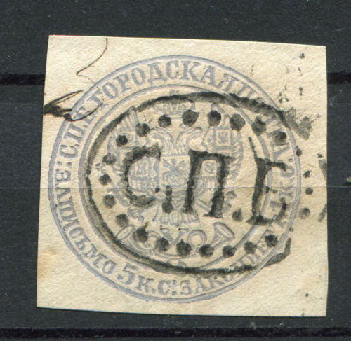
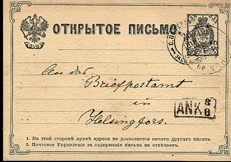
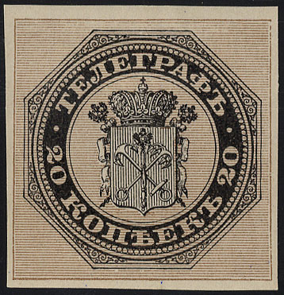
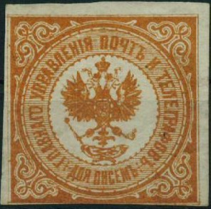

Return To Catalogue - Russia overview
Note: on my website many of the
pictures can not be seen! They are of course present in the
catalogue;
contact me if you want to purchase the catalogue.
ENVELOPES OF THE RUSSIAN EMPIRE 1845-1848 Arms of Russia
20 k blue still on envelope

With St.Peterburg cancel.
5 Kop blue (stamped envelope for St.Petersburg, 1845) 5 Kop red 10 Kop black 20 Kop blue 30 Kop red 1869 Arms of Russia
(Reduced size)
Reduced size
5 Kop red 5 Kop red

A Senf forgery with overprint
"FACSIMILE".
2 k green 3 k red 5 k violet 7 k blue Surcharged
These postal stationery in a similar design, but with small circles added, were issued for Finland.
Other postal stationery:


I have seen the values: 5 k violet 7 k grey 8 k grey 10 k brown 20 k blue 30 k red Surcharged with fancy pattern:
7 k on 8 k grey 7 k on 10 k brown
(Reduced size)
I have seen another postcard in a different design of 14 k blue and two postcards of 10 k blue and 20 k blue in again another design.
1913 Romanov issue (as postage stamps)
Besides the above shown 3 k red, I have also seen: 1 k orange, 2 k green, 7 k brown, 10 k blue, 14 k green and 20 k green.

20 k brown and black '10 k. 10 k.' on 20 k brown and black
Value of the stamps |
|||
vc = very common c = common * = not so common ** = uncommon |
*** = very uncommon R = rare RR = very rare RRR = extremely rare |
||
| Value | Unused | Used | Remarks |
| 20 k | RRR | RRR | Less than 10 stamps seem to have survived. |
| 10 k on 20 k | RRR | RRR | |

Reprints were made in 1881, the above imperforate stamp is such a
reprint. I don't know if reprints were always imperforate.
(Reduced sizes)
I have seen such a cut pasted on part of a letter.


{kind=link}
{kind=link}
{kind=link}